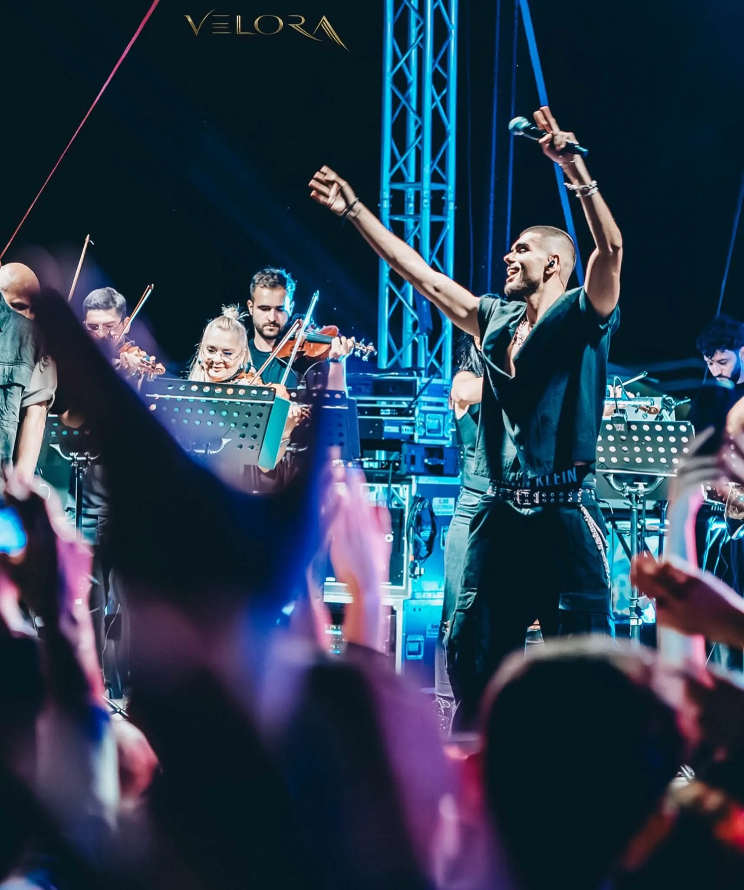
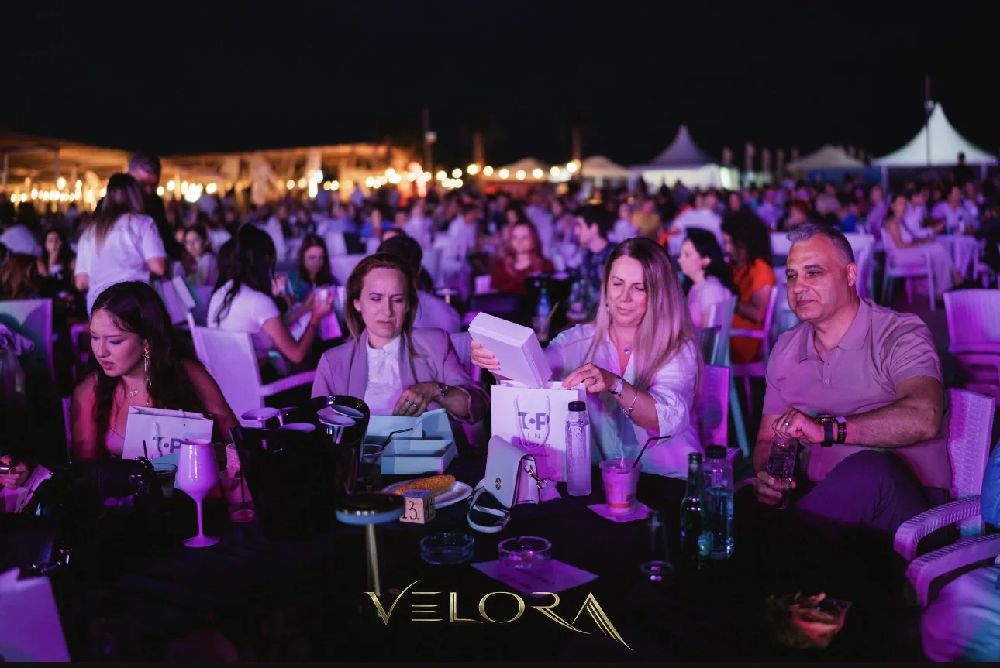
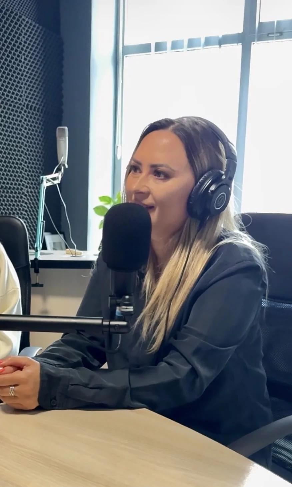
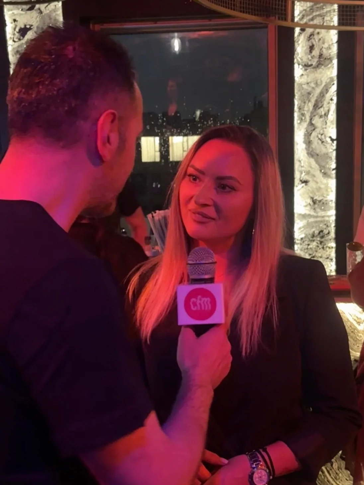
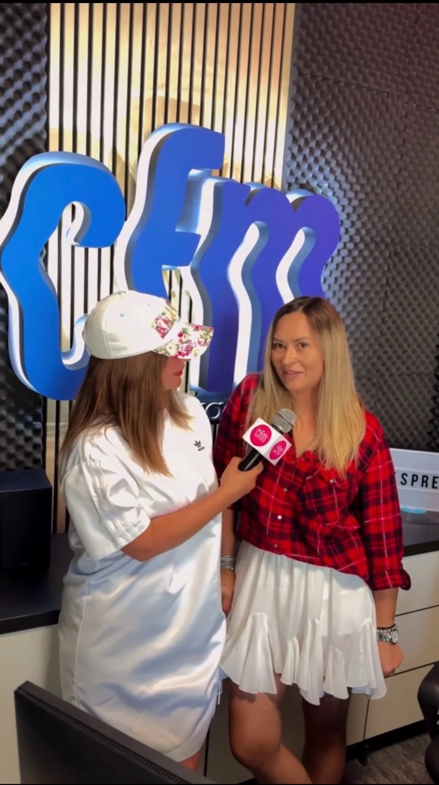

Concept &
direcție creativă
Pornim de la obiectiv, public și context. Construim formatul, identitatea și experiența care diferențiază fiecare proiect.
Producție de evenimente
cu o perspectivă diferită.
Velora Production este un studio independent de producție și organizare de evenimente. Dezvoltăm concepte proprii și realizăm proiecte la comandă, de la concerte și festivaluri la evenimente culturale, corporate și experiențe de brand.
Să construim ceva împreunăUn singur partener de producție. Toate detaliile conectate într-o experiență coerentă.
Pornim de la obiectiv, public și context. Construim formatul, identitatea și experiența care diferențiază fiecare proiect.
Artiști, scenotehnică, sunet, lumini, ecrane LED, furnizori, logistică și management tehnic, coordonate într-un singur flux.
Construim vizibilitatea proiectului și integrăm partenerii în experiențe care au sens pentru public, nu doar pe materialele promoționale.
De la planificare și autorizații la echipe, securitate, coordonare în teren și livrarea momentului live, fiecare detaliu contează.
Festivaluri · Concerte · Evenimente culturale · Zilele orașelor · Evenimente corporate · Evenimente private · Experiențe pentru comunități
Pentru public, pentru parteneri, pentru comunitate.
Proiecte diferite. Aceeași atenție pentru experiență, atmosferă și execuție.

LIVE PERFORMANCE / CONSTANȚAUn concept live care a adus împreună muzica urbană și forța unei orchestre simfonice, într-o experiență construită pentru a emoționa și a surprinde.

Transformăm experiențele live în contexte naturale de întâlnire între branduri și oameni.
Prezență în comunicarea evenimentului, în spațiul fizic și în materialele foto-video, în funcție de obiectivele partenerului.
Activări, experiențe și interacțiuni care transformă simpla expunere într-un contact memorabil.
Construim propuneri adaptate fiecărui brand, proiect și tip de audiență, cu livrabile stabilite transparent.
Parteneriatele și tipurile de colaborare diferă de la un proiect la altul.
Evenimentele capătă amploare prin comunicare, colaborări cu artiștii și prezență media. Proiectele Velora au beneficiat inclusiv de apariții radio la Constanța.



Un festival, un concert, un eveniment pentru comunitate sau o experiență pentru brandul tău. Povestește-ne ce ai în minte și construim împreună următorul proiect.